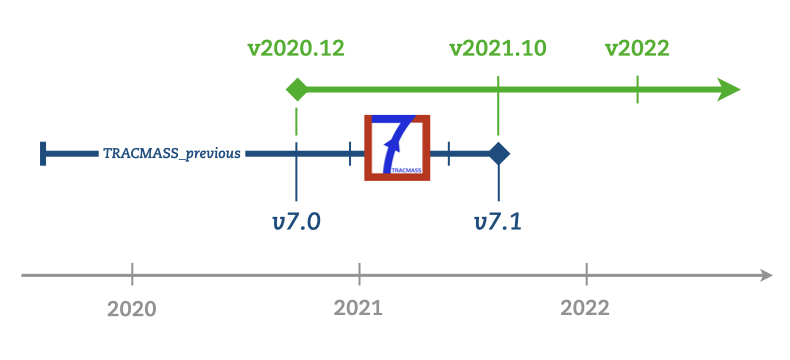

TRACMASS version renaming
20/10/2021

For simplifying the different version numbers of TRACMASS, from now the different versions will be a combination of the year and the month when the changes were committed (vYYYY.MM):
- Version 7.0 will be known as v2020.12.
- Version 7.1 will be known as v2021.10.
Any future version will be described using the new style.
Release of version 7.0
18/12/2020
A new version of TRACMASS (v7.0-beta) is now available. This version includes the following new features:
- The code has been thoroughly cleaned up
- Supported test cases from:
- Ocean circulation models: NEMO, MOM5, ROMS
- Satellite ocean current data AVISO
- Atmospheric circulation model data IFS (ERA-Interim, EC-Earth)
- Any tracer can be followed e.g. biogeochemical tracers or chemical compounds in the atmosphere.
- A new quick-start guide and a comprehensive documentation.